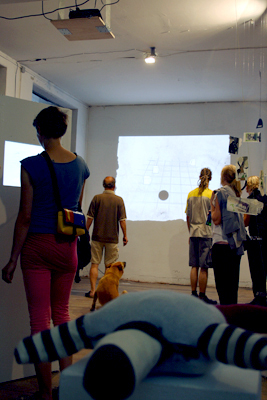

Im Mittelpunkt der Ausstellung steht die Sensibilisierung
für das Ungreifbare, das Unsichtbare, dass durch verschiedene Sensoren sichtbar und formbar gemacht wird. Die Arbeiten
bewegen sich zwischen Technik und künstlerischer Formgebung,
sie experimentieren mit der Wirkung projizierter Form auf zweidimensionaler Fläche.
Ausstellungszeitraum war von 22. Juli bis 05. August 2010 in der Fabrik des Gängeviertel in Hamburg.
In der Ausstellung »float« sind Arbeiten zu sehen, die anhand
von Sensoren Unsichtbares in Formen übersetzen. Durch Interaktion werden Dialoge geführt, die nicht durch Worte geleitet werden.
Viel mehr geht es um Bewegungen und Aktionen, so dass eine andere Form der Kommunikation entsteht. Die Besucher sind eingeladen, nicht nur miteinander, sondern auch mit folgenden Arbeiten zu kommunizieren:


Ein Kooperationsprojekt der Departments Design und Informatik mit Clara Bosch, Gesa Hansen, Erik Herrmann, Marco Johns, Fee Keller, Marissa Kimmel, Adriane Künne, Christoph Lohse, Jascha Nitzschmann, Fabian Puller, Paul Zürker betreut von Prof. Franziska Hübler, Prof. Gunter Klemke, Prof. Kai von Luck, Prof. Birgit Wendholt und mit Unterstützung der Zentralwerkstatt.
Videodokumentation: Marissa Kimmel.
Fotodokumentation: Adriane Künne.
von Christoph Lohse, Jascha Nitzschmann, Adriane Künne, Fee Keller
Der Ansatz für die spielerische Kommunikation zwischen den Teilnehmern ist der Versuch im Sinne des Projektes die unsichtbaren Beziehungen zwischen Menschen darzustellen. Des Weiteren ist die Aufgabe schwerer allein zu lösen ist, so dass die Spielteilnehmer dazu gebracht werden außenstehende Personen einzuladen am Spiel teilzunehmen. Es gibt sowohl eine Kommunikation innerhalb der »Welt« als auch über dessen Grenzen hinaus.

Eine an der Decke aufgehängte und auf den Boden gerichtete Kamera nimmt Personen auf, die sich auf einer definierten Fläche bewegen. Das Programm welches im Kurs erstellt wurde erfasst nun die Positionen der Personen. Diese Positionsdaten werden benutzt um die Winkel einer virtuellen Wippe zu berechnen. Auf dieser Wippe befindet sich ein Objekt dessen Position auf der Wippe durch die Winkel bestimmt wird, es rutscht runter wenn die Wippe in Schieflage gerät. Ziel dieses Aufbaus ist es das Objekt auf der Wippe zu balancieren. Die Projektidee beruht auf Leonardos Wippe.


von Marissa Kimmel, Fabian Puller, Paul Zürker
Eine dem Programmieren nicht eigene, aber doch signifikante Eigenschaft, des Verbindens verschiedener Elemente in Wechselwirkung zu etwas Ungekannten, wird in dieser Arbeit, mit ironischer Distanz und dem emanzipativen Gehalt des Schöpfergeistes, dessen Gebilde sich nun wieder selbstreferentiell in gewissen Freiheitsgraden durch die Virtualität entgrenzen, in Szene gesetzt und Kraft des Atems der Besucher/innen in spielerische Bewegungsbilder übersetzt. In schwärmerischer Interaktion vollführen die Besucher_innen die Bewegung des Virtuellen im realen Raum.


Beschreibung:
Ich hab mein Vogel ins Aquarium geschmissen. Das Objekt besteht aus vier Bildschirmen, die mit dem Rücken zueinander auf
einem Sockel/Podest stehen. Die Betrachter können das Objekt ganzseitig umlaufen. Die Bildschirme eröffnen vier Perspektiven auf ein Objekt. Dadurch erhält der Aufgabe den Charakter eines Aquariums. An allen vier Seiten befinden sich Mikrofone, durch die das Objekt beeinflusst werden kann. die Schallwellen werden durch das Mikrofon ins »Innere« geleitet. Diese Informationen dienen als Attraktoren, die in wellenförmigen Schüben ein Partikel-System beeinflussen.


von Gesa Hansen und Marco Johns
Der Betrachter ist das Objekt ist der Betrachter. Nichts passiert, ohne seine Einflussnahme, er kreiert sich selbst. Ein spielerischer Umgang mit der Kausalität. In der Fotokammer kann man, per Selbstauslöser, eine Ganzkörperaufnahme machen. Das projizierte Bild an der Wand kann, durch verformen der Puppe, verändert werden.

Um einen menschlichen Körper zu verzerren, genügt es für den Anfang an bestimmten Punkten (z.B. Extremitäten) anzusetzen und dort einfache Verzerrungsfilter anzuwenden (Strecken/Stauchen/Drehen etc.). Hierfür habe ich eine Bibliothek gefunden, welche mit Java BufferedImage arbeitet (Kompatibel zu den Processing Images).


von Clara Lotta Bosch (Installation) und Tobi von Tann (Sound)
Die selbstverständliche Auseinandersetzung mit den alltäglichen Gegenständen des Lebens macht Dinge zu Wesen. Dabei könnten natürlich Gegenstände des Haushalts Sinnbild für Gegenstände des
Körperhaushalts sein – könnten, müssten aber nicht. Der Mensch bringt das Ding zum Schweigen, aber wer hat den längeren Atem? Lautes Rufen oder Klatschen ins Mikro stoppt den Sauger in seinem Monolog.


von Erik Herrmann
Ritual. Sehen, Blindheit und Zeichnen (Aufzeichnungen eines Blinden, Jaques Derrida). Suche und Protokoll, Muster und Material. Variabler Prozess. Erkenntnis – oder Nichts.